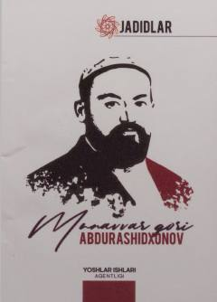

JMJadidchilik harakati namoyandasi Munavvar qori Abdurashidxonovning hayoti va faoliyati haqida tarixiy risola.
Ushbu risola jadidchilik harakatining yirik namoyandasi Munavvar qori Abdurashidxonovning hayot yo'li va ijtimoiy-ijodiy faoliyatiga bag'ishlangan. Kitobda uning tarixda tutgan o'rni, madaniy-ma'rifiy xizmatlari tahlil qilinib, adibning hikmatli so'zlari va zamondoshlarining e'tiroflari keltirilgan.